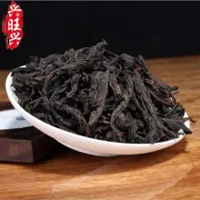

大红袍
武夷山大红袍是植株灌木型，树冠半披张，权高可达2米以上，主干尚明显，分枝较密，叶梢向上斜生长，叶，一般在6—7cm，长者可达10一11cm；宽一般3cm左右，宽者可达4—4.3cm，中叶型，近阔椭圆形，先端钝略下垂、叶缘略向面、叶绿光亮，叶肉稍厚微隆质脆、叶尚浅尚明27—28对，叶脉7—9对，花型尚大，直径3cm左右，花瓣6片，萼片5片、花丝稀疏稍长，高低不齐，二倍体，茶果中等。嫩芽梢尚壮，深绿微紫，夏梢叶更显带红毫尚显，萌芽、开采期比肉桂品种迟，一般在5月10日左右（缓冬年份）。

武夷山大红袍外形条索紧结，色泽绿褐鲜润，冲泡后汤色橙黄明亮，叶片红绿相间，典型的叶片有绿叶红镶边之美感。大红袍品质最突出之处是香气馥郁有兰花香，香高而持久，“岩韵”明显。大红袍很耐冲泡，冲泡七八次仍有香味。